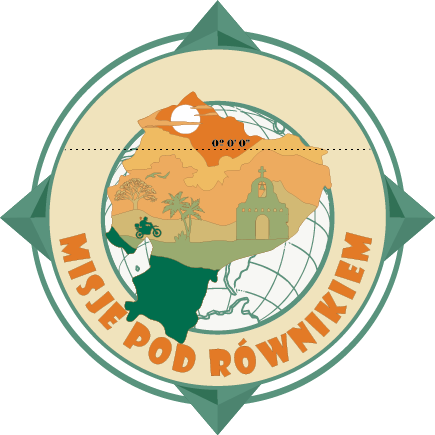

Moje
projekty
Aplikacje i programy
Manna SacerdotalisKalendarz liturgiczny i pomocnik Liturgii godzin. iPhone i Android, bezpłatnie.
FidesCuentaPrzychody, wydatki i portfele parafii, stowarzyszenia i domu. iPhone, iPad i Mac, bezpłatnie.
 NupTyKancelaria parafialna: dokumentacja przedślubna według Dekretu KEP 2019. Windows i Mac.
NupTyKancelaria parafialna: dokumentacja przedślubna według Dekretu KEP 2019. Windows i Mac.
 Diócesis de DauleStrona internetowa diecezji Daule: parafie, duszpasterstwa, agenda i aktualności.
Diócesis de DauleStrona internetowa diecezji Daule: parafie, duszpasterstwa, agenda i aktualności.
NupTyKancelaria parafialna: dokumentacja przedślubna według Dekretu KEP 2019. Windows i Mac.
AliBancoProgram dla banku żywności: dostawy, wydawanie, magazyn, umowy, budżet i rozliczenia.
Diócesis de DauleStrona internetowa diecezji Daule: parafie, duszpasterstwa, agenda i aktualności.Mis
proyectos
Aplicaciones y programas
Manna SacerdotalisCalendario litúrgico y guía de la Liturgia de las Horas. iPhone y Android, gratis.
FidesCuentaIngresos, gastos y carteras de la parroquia, la asociación y la casa. iPhone, iPad y Mac, gratis.
NupTyDespacho parroquial: expediente prematrimonial según el Decreto de la Conferencia Episcopal Polaca de 2019. Windows y Mac.
Diócesis de DauleSitio web de la Diócesis de Daule: parroquias, pastorales, agenda y noticias.
NupTyDespacho parroquial: expediente prematrimonial según el Decreto de la Conferencia Episcopal Polaca de 2019. Windows y Mac.
AliBancoPrograma para un banco de alimentos: entregas, despacho, bodega, contratos, presupuesto y liquidación.
Diócesis de DauleSitio web de la Diócesis de Daule: parroquias, pastorales, agenda y noticias.